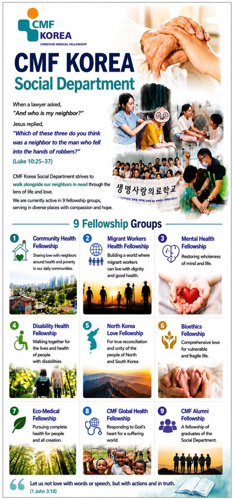

Official Founding of CMF Korea
First National Student Retreat
Leadership Development Begins
First LTC and House of Luke established
Nationwide Expansion
Regional Luke Fellowships established
Global Mission Begins
First overseas medical mission and Mission Department established
Academic Engagement
First seminar on faith and medicine
Serving the Vulnerable
Jubilee Clinic, GLOBAL CARE, and leadership reform
Celebrating 20 Years
National gathering of students, faculty, and alumni
Strengthening the Organization
Regional finance and membership systems established
A Growing Movement
Expanded to 8 Regional Fellowships and 3 Professional Ministries
Official Missionary-Sending Organization
CMF Korea became an official missionary-sending organization of KCMF
30th Anniversary
Joint Student & Graduate Retreat
Research & Scholarship
Luke Research Institute and Scholarship Foundation established
Family Ministry
Family Ministry Committee and Glamping Fellowship launched
Equipping Future Leaders
Luke Training Institute and expanded global partnerships
Ministry During the Pandemic
Online ministry and National Student Retreat
Preparing for the Future
• 40-Year History published • Bioethics initiatives • Mission training
• Hosting 18th ICMDA World Congress, Jeju 2026
"Together in Joy, Bringing Healing and Restoration to the Whole Person"
— Luke 4:18–19
원본 리플렛 — History of CMF Korea
"Which of these three do you think was a neighbor to the man who fell into the hands of robbers?"
— Luke 10:25–371. Community Health Fellowship
Sharing love with neighbors around health and poverty in our daily communities.
2. Migrant Workers Health Fellowship
Building a world where migrant workers can live with dignity and good health.
3. Mental Health Fellowship
Restoring wholeness of mind and life.
4. Disability Health Fellowship
Walking together for the lives and health of people with disabilities.
5. North Korea Love Fellowship
For true reconciliation and unity of the people of North and South Korea.
6. Bioethics Fellowship
Comprehensive love for vulnerable and fragile life.
7. Eco-Medical Fellowship
Pursuing complete health for people and all creation.
8. CMF Global Health Fellowship
Responding to God's heart for a suffering world.
9. CMF Alumni Fellowship
A fellowship of graduates of the Social Department.
"Let us not love with words or speech,
but with actions and in truth."
— 1 John 3:18

원본 리플렛 — Social Department